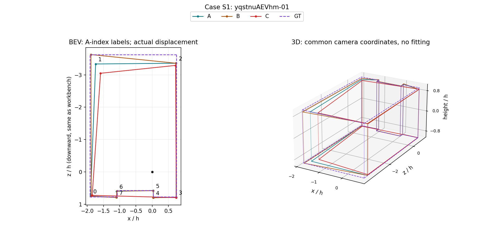
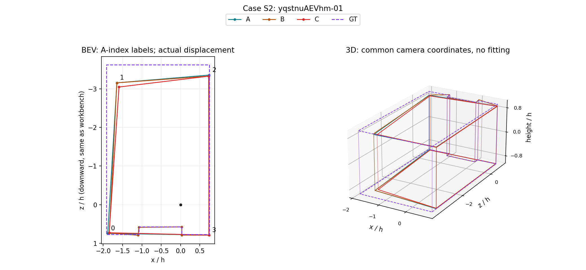
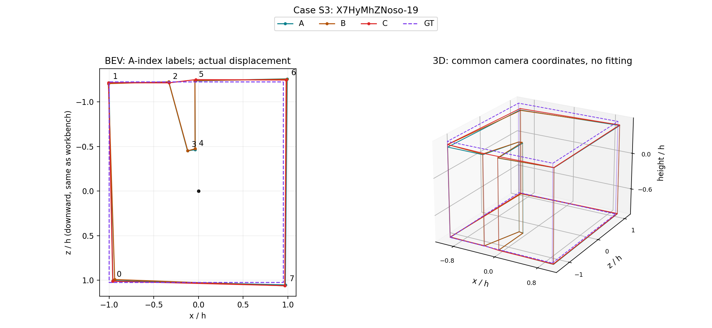

换类别块后，差别是否确实有意义？
451个对照、1353支不同团队。原事件重放133个，额外背景318个。以下4例按固定规则从新背景中选取，供判断几何意义，不代表总体成功率。完整结果见核查报告。
人工复核摘要（2026-10-20）：前两例整体差异不明显；第3例A/C有一定区别；第4例A/B、A/C均有小差异，BEV涉及左上外凸和左下内凹。下方案例名称是计算判据分组，不是人工认可标签；逐点解释见角点复审报告。
451对照扩展：直接比较对应角点距离
393个事件可同时比较A/B、A/C；其余58个保留结构／完整性记录，不补零。下表是新背景、原留出图片的建筑等权BEV平均角点距离，单位为相机高度h。
| 方向 | 事件／图／楼 | 同类 | 跨类 | 跨类／同类 |
|---|---|---|---|---|
| G，17人换8 | 59／22／5 | 0.0660h | 0.0985h | 1.49 |
| R，13人换2 | 52／18／6 | 0.0238h | 0.0541h | 2.27 |

节点投票机制已核对
174队重放几何全部一致。门槛均为9票：S1四个凹口节点10/9/10/9→8/7/7/5，跨类后失选；S2同类换人使8/7/8/8→10/10/10/10，恢复凹口；S3两个节点11→8，消除偏离参考的深凹槽。
结构与失败：全部451事件保留
58个非共同角点候选已补查。新增背景、原留出图片的角点数变化率（建筑等权）：G同类8.02%／跨类13.85%；R同类2.38%／跨类5.40%。变化可能是丢结构，也可能补回遗漏或消除错误凹槽，不能直接称为退化率。
展开三组BEV／3D叠图：丢失、恢复与减点改善
A原团队，B同类替换，C跨类替换；以下是事后解释案例。
同图背景一：跨类替换丢失凹口

同图背景二：同类替换恢复凹口

另一图：减点同时消除偏离参考的凹槽

紫色为固定参考；青色为A；橙色为所选B或C。可切换俯视／3D及单层显隐。连线展示本轮评分使用的自动候选环，不表示人工确认。团队字母不是人员质量等级。
查看这几支团队成员的原标注
人工反馈已记录：这4例已完成用户意见回接和逐角点复审，不要求重复逐例判断。后续若发现需要裁定的范围或点位语义，再单独提交。
当前仍沿用原主判据：完整、分差≤2、底面Jaccard差≤0.05、同节点数、绑定角差≤3°。宽判据为5／0.10／5°。人工评论已记录，尚未据此修改阈值。原图沿用仓库资产，缺图时可看俯视和3D。
对应角点距离复审
单位h为相机高度，不是米；三队角点已核对对应，未进行空间对齐拟合。完整视觉与数值解释 · 逐角点数值
| 案例 | 比较 | BEV均值/h | BEV最大/h | 顶部3D最大/h |
|---|---|---|---|---|
| 1 | AB | 0.0081 | 0.0152 | 0.0358 |
| 1 | AC | 0.0100 | 0.0324 | 0.0326 |
| 2 | AB | 0.0510 | 0.1216 | 0.1221 |
| 2 | AC | 0.0672 | 0.1208 | 0.1273 |
| 3 | AB | 0.0401 | 0.0994 | 0.1065 |
| 3 | AC | 0.1598 | 0.3583 | 0.3743 |
| 4 | AB | 0.0483 | 0.1178 | 0.1325 |
| 4 | AC | 0.0494 | 0.1508 | 0.1605 |
前两例形状相近；第三例A/C变化更大；第四例A相对B左上更外，A相对C左下更内。Q差排序与几何距离排序不一致。